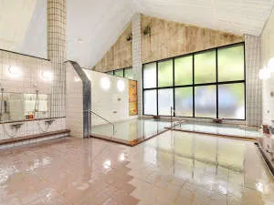
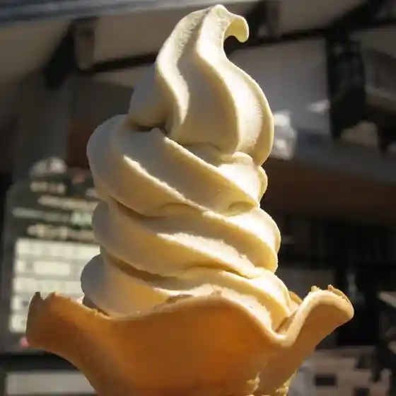
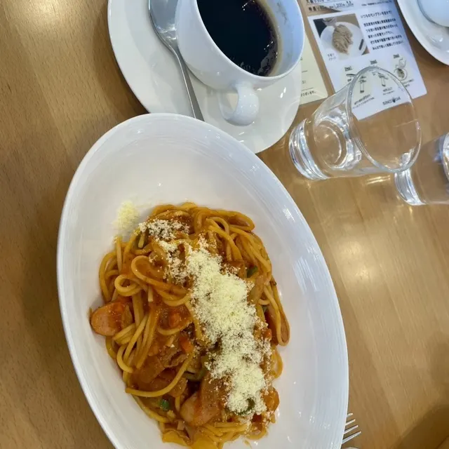
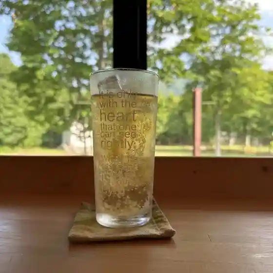
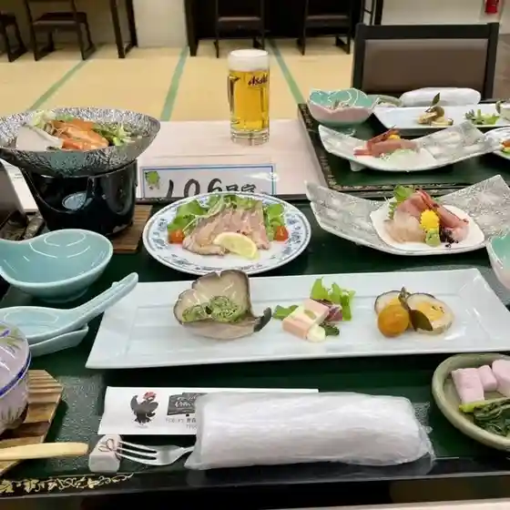
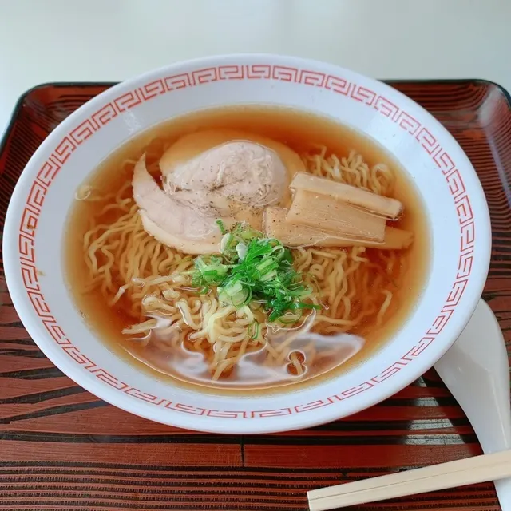
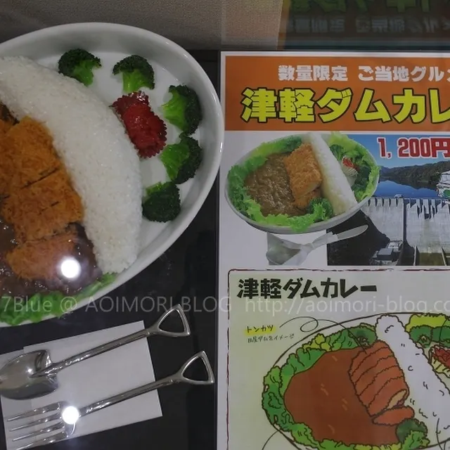
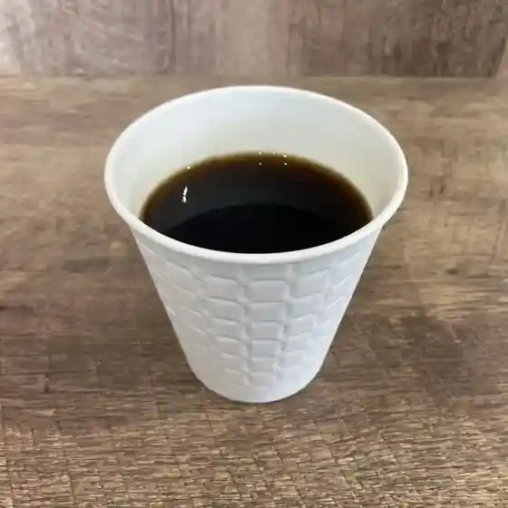

Nishimeya
Nishimeya · Aomori
Nishimeya
Highlighted on the Aomori map.

Stay
大秋温泉 ブナの里白神館

Dai Aki Onsen Buna No Sato Shirakami Kan
グリーンパーク もりのいずみ

Guriinpaaku Morinoizumi
Dining
BeFavo

Befavo
ANMON

Anmon
ブナコ カフェ

Bunako Kafe
白神とうふ

Shirakami Toufu
グリーンパークもりのいずみ

Guriinpaaku Morinoizumi
カネミツタザワ

Kanemitsutazawa
森のドア

Mori No Doa
白神焙煎舎

Shirakami Baisen Sha
白神館
Shirakami Kan
こころ
Kokoro
ビーチにしめや
Biichi Nishimeya
カフェ・ルーラル
Kafe Ruuraru
Sights
Anmon-no-Taki Waterfall
This waterfall has three steps: from the top, "Ichi-no-Taki (first fall)" 42 meters, "Ni-no-Taki (second fall)" 37 meters, and "San-no-Taki (third fall)" 26 meters, all of which a
Nioga Falls

33 m waterfall at the gateway to the Shirakami Mountains, surrounded by 300-year-old cedars.
Shirakami Sanchi Visitor Center
Visitor center opened in 1998 introducing the Shirakami Mountains, with a large-screen beech forest film.
Aqua Green Village ANMON

Enjoy nature in this vast virgin beech tree forest. Facilities include cottages, a fishing hole, woodcraft center (Tontenkan), a camp site, Wanpaku Toride (athletic playground for children) and ANMON hot springs.
Roadside Station Tsugaru Shirakami

The farmers` market at this roadside station, which is situated in central Nishimeya Village, is visited by many tourists both domestic and international.
Lake Tsugaru Shirakami (Tsugaru Dam)
Lake formed by Aomori's largest gravity dam, completed in 2016 at the gateway to Shirakami-Sanchi.
Beech Forest Walking Trail
Easy one-hour walk through deep beech forest near the Anmon Falls trailhead.
Iwaya Kannon
Rare Kannon hall built into a cave along the Iwaki River.
Nishimeya Dam Lake Amphibious Bus Tour
Tour on Tohoku's first amphibious bus that drives into Lake Tsugaru Shirakami.
Anmon Gorge Route
Unmaintained route up the Anmon River to the three Anmon Falls.